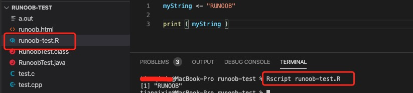

一门新的语言学习一般是从输出 "Hello, World!" 程序开始，R 语言的 "Hello, World!" 程序代码如下：
实例（helloworld.R）
myString
<- "Hello, World!"
print ( myString
)
运行实例 »
以上实例将字符串 "Hello, World!" 赋值给 myString 变量，然后使用 print() 函数输出。
注意：R 语言赋值使用的是左箭头 <- 符号，不过一些新版本也支持等号 =。
注意：R 最常见的脚本文件后缀为 .R。
例如：
hello.R
data_analysis.R
stock.R
虽然 .r 也能用，但社区主流几乎全是 .R。
变量
R 语言的有效的变量名称由字母，数字以及点号 . 或下划线 _ 组成。
变量名称以字母或点开头。
| 变量名 |
是否正确 |
原因 |
| var_name2. |
正确 |
字符开头，并由字母、数字、下划线和点号组成 |
| var_name% |
错误 |
% 是非法字符 |
| 2var_name |
错误 |
不能数字开头 |
.var_name,
var.name |
正确 |
可以 . 号开头，但是要注意 . 号开头后面不能跟着数字 |
| .2var_name |
错误 |
. 号开头后面不能跟着数字 |
| _var_name |
错误 |
不能以下划线 _ 开头 |
变量赋值
最新版本的 R 语言的赋值可以使用左箭头 <-、等号 = 、右箭头 -> 赋值:
实例
# 使用等号 = 号赋值
> var.1
= c(0,
1,
2,
3)
> print(var.1
)
[1] 0 1 2 3
# 使用左箭头 <-赋值
> var.2
<- c("learn",
"R")
> print(var.2
)
[1] "learn" "R"
# 使用右箭头 -> 赋值
> c(TRUE,
1) -> var.3
> print(var.3
)
[1] 1 1
查看已定义的变量可以使用 ls() 函数：
实例
> print(ls())
[1] "var.1" "var.2" "var.3"
删除变量可以使用 rm() 函数：
实例
> rm(var.3
)
> print(ls())
[1] "var.1" "var.2"
>
上一章节中我们已经学会来如何安装 R 的编程环境，接下来我们将为大家介绍 R 语言的交互式编程与文件脚本编程。
交互式编程
我们只需要在命令行中执行 R 命令就可以进入交互式的编程窗口：
R
执行完这个命令后会调出 R 语言的解释器，我们在 > 符后面输入代码即可。
交互式命令可以通过输入 q() 来退出：
> q()
Save workspace image? [y/n/c]: y
文件脚本
R 语言文件后缀为 .R。
接下来我们创建一个 runoob-test.R 文件：代码如下：
runoob-test.R 文件
myString
<- "RUNOOB"
print ( myString
)
接下来我们在命令行窗口使用 Rscript 来执行该脚本：
Rscript runoob-test.R
输出结果如下：
[1] "RUNOOB"

输入输出
print() 输出
print() 是 R 语言的输出函数。
和其他编程语言一样，R 语言支持数字、字符等输出。
输出的语句十分简单：
print("RUNOOB")
print(123)
print(3e2)
执行结果：
[1] "RUNOOB"
[1] 123
[1] 300
R 语言与 node.js 和 Python 一样，是解释型的语言，所以我们往往可以像使用命令行一样使用 R 语言。
如果我们在一行上进输入一个值，那么 R 也会把它直接标准化输出：
> 5e-2
[1] 0.05
R 的打印结果为什么有 [1]？
很多新手第一次看到：
[1] 30
不知道什么意思，这个 [1]不是数组下标。
[1] 这一行输出从第 1 个元素开始。
因为 R 天生就是向量化语言。
例如：
x <- c(10,20,30)
print(x)
输出：
[1] 10 20 30
如果内容太长：
[1] ...
[4] ...
[7] ...
表示这一行从第几个元素开始。
cat() 函数
如果需要输出结果的拼接，我们可以使用 cat() 函数：
实例
> cat(1,
"加",
1,
"等于",
2,
'\n')
1 加
1 等于
2
cat() 函数会在每两个拼接元素之间自动加上空格。
输出内容到文件
R 语言输出到文件的方法十分多样，而且很方便。
cat() 函数支持直接输出结果到文件：
cat("RUNOOB", file="/Users/runoob/runoob-test/r_test.txt")
这个语句不会在控制台产生结果，而是把 "RUNOOB" 输出到 "/Users/runoob/runoob-test/r_test.txt" 文件中去。
file 参数可以是绝对路径或相对路径，建议使用绝对路径，Windows 路径格式为 D:\\r_test.txt。
cat("RUNOOB", file="D:\\r_test.txt")
注意：这个操作是"覆盖写入"操作，请谨慎使用，因为它会将输出文件的原有数据清除。如果想"追加写入"，请不要忘记设置 append 参数：
cat("GOOGLE", file="/Users/runoob/runoob-test/r_test.txt", append=TRUE)
执行以上代码后，打开 r_test.txt 文件内容如下：
RUNOOBGOOGLE
sink()
sink() 函数可以把控制台输出的文字直接输出到文件中去：
sink("/Users/runoob/runoob-test/r_test.txt")
这条语句执行以后，任何控制台上的输出都会被写入到 "/Users/runoob/runoob-test/r_test.txt" 文件中去，控制台将不会显示输出。
注意：这个操作也是"覆盖写入"操作，会直接清除原有的文件内容。
如果我们依然想保留控制台的输出，可以设置 split 属性：
sink("/Users/runoob/runoob-test/r_test.txt", split=TRUE)
如果想取消输出到文件，可以调用无参数的 sink ：
sink()
实例
sink("r_test.txt",
split=TRUE
) # 控制台同样输出
for (i
in 1:5)
print(i
)
sink() # 取消输出到文件
sink("r_test.txt",
append=TRUE
) # 控制台不输出，追加写入文件
print("RUNOOB")
执行以上代码，当前目录下会生存一个 r_test.txt 文件，打开文件内容如下：
[1] 1
[1] 2
[1] 3
[1] 4
[1] 5
[1] "RUNOOB"
控制台输出为：
[1] 1
[1] 2
[1] 3
[1] 4
[1] 5
文字输入
可能我们会联想到 C 语言中的 scanf 、Java 中的 java.util.Scanner，如果你学习过 Python 可能对 input() 函数更熟悉。但是 R 语言本身作为一种解释型的语言，更类似于一些终端脚本语言（比如 bash 或者 PowerShell），这些语言是基于命令系统的，本身就需要输入和输出且不适合开发面向用户的应用程序（因为他们本身就是给最终用户使用的）。因此 R 语言没有专门再从控制台读取的函数，文字输入在 R 的使用中一直在进行。
从文件读入文字
R 语言中有丰富的文件读取函数，但是如果纯粹的想将某个文件中的内容读取为字符串，可以使用 readLines 函数：
readLines("/Users/runoob/runoob-test/r_test.txt")
执行结果：
[1] "RUNOOBGOOGLE"
读取结果是两个字符串，分别是所读取的文件包含的两行内容。
注意：所读取的文本文件每一行 (包括最后一行) 的结束必须有换行符，否则会报错。
其他方式
除了文字的简单输入输出以外，R 还提供了很多输入数据和输出数据的方法，R 语言最方便的地方就是可以将数据结构直接保存到文件中去，而且支持保存为 CSV、Excel 表格等形式，并且支持直接地读取。这对于数学研究者来说无疑是非常方便的。但是这些功能对于 R 语言的学习影响不大，我们将在之后的章节提到。
工作目录
对于文件操作，我们需要设置文件的路径，R 语言可以通过以下两个函数来获取和设置当前的工作目录：
-
getwd() : 获取当前工作目录
-
setwd() : 设置当前工作目录
实例
# 当前工作目录
print
(getwd
())
# 设置当前工作目录
setwd
("/Users/runoob/runoob-test2")
# 查看当前工作目录
print
(getwd
())
执行以上代码输出结果为：
[1] "/Users/runoob/runoob-test"
[1] "/Users/tianqixin/runoob-test2"
R 最核心的特点：向量化
这是 R 最强大的地方之一。
Python：
for i in range(10):
...
R：
x <- c(1,2,3)
x * 2
结果：
[1] 2 4 6
整个向量直接计算。
这让 R 在数学、统计、数据分析领域极其强大。